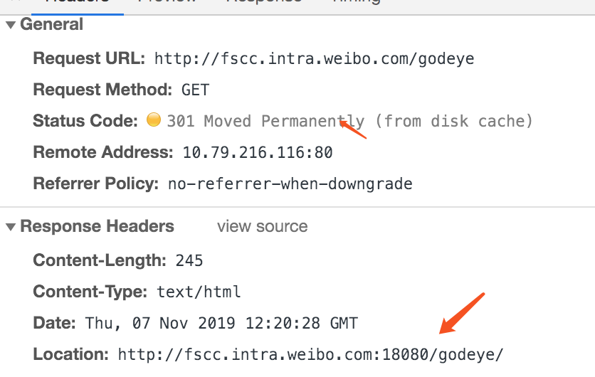

What is nginx
NGINX is a well known open source project originally written by Igor Sysoev, a Russian engineer. Igor started the project in 2002 and made it public in 2004. Since that time NGINX has become a de‑facto standard for high‑performance, scalable websites. Tens of millions of active websites use NGINX, including the majority of the 100,000 busiest websites in the world. Companies like Airbnb, Box, Dropbox, Netflix, Tumblr, WordPress.com, and many others deploy NGINX for scalability and performance reasons.
NGINX is a high‑performance, highly scalable, highly available web server, reverse proxy server, and web accelerator (combining the features of an HTTP load balancer, content cache, and more). NGINX offers a highly scalable architecture that is very different from that of Apache (and many other open source and commercial products in the same category). NGINX has a modular, event‑driven, asynchronous, single-threaded architecture that scales extremely well on generic server hardware and across multi-processor systems. NGINX uses all of the underlying power of modern operating systems like Linux to optimize the usage of memory, CPU, and network, and extract the maximum performance out of a physical or virtual server. The end result is that NGINX can often serve at least 10x more (and often 100–1000x more) requests per server compared to Apache – that means more connected users per server, better bandwidth utilization, less CPU and RAM consumed, and a greener environment too!
For more information about the NGINX architecture please refer to a chapter dedicated to NGINX in the “Architecture of Open Source Applications” book.
模块化，事件驱动
配置示例
nginx.conf
1
2
3
4
5
6
7
8
9
10
11
12
13
14
15
16
17
18
19
20
21
22
23
24
25
26
27
28events {
worker_connections 1024;
}
http {
include mime.types;
default_type application/octet-stream;
sendfile on;
keepalive_timeout 65;
#分离upstream
include vhost/*.upstream;
server {
listen 18080;
server_name localhost;
access_log logs/host.access.log main;
#默认本地处理
location / {
proxy_pass http://xxxx/;
proxy_redirect default;
#root html;
#index index.html index.htm;
}
#分离location配置
include vhost/*.conf;
}
}upstream
1
2
3
4
5upstream xx_server {
server xx:5601;
server xx:5601;
session_sticky cookie=_ng_route_;
}location
1
2
3
4
5location /log {
rewrite /log/(.*) /$1 break;
access_log logs/xxx.log;
proxy_pass http://xx_server/;
}
一些基于nginx的项目
-
阿里开源,编译3方模块时坑更少.
-
ref: https://moonbingbing.gitbooks.io/openresty-best-practices/content/
留坑，待看.
容易忽略的问题
proxy_pass后的trailing slash(尾部斜杠)(仔细阅读proxy_pass的文档即可)
在nginx中配置proxy_pass时，如果是按照^~匹配路径时,要注意proxy_pass后的url最后的/,
当加上了/，相当于是绝对根路径，则nginx不会把location中匹配的路径部分代理走;
如果没有/，则会把匹配的路径部分也给代理走。
eg:不带/
1
2
3location /test/ {
proxy_pass http://t6:8300;
}访问url = http://server/test/test.jsp，则被nginx代理后，请求路径会变为
http://proxy_pass/test/test.jsp，将test/作为根路径，请求test/路径下的资源
带/
1
2
3location /test/ {
proxy_pass http://t6:8300/;
}访问url = http://server/test/test.jsp，则被nginx代理后，请求路径会变为
http://proxy_pass/test.jsp，直接访问server的根资源
301 重定向

1
2
3location /godeye {
root /www/;
}这种配置下,nginx会自动添加上斜杠返回一个301重定向给浏览器. 默认重定向url是携带port的。就会出现图示中的情况.
通过port_in_redirect关闭后. 请求依然存在问题..
因为301是permenant redirection，浏览器完全可以缓存这个记录。所以新添加的规则并不会被使用。关闭cache后，一起恢复正常.
ref: nginx document
If a location is defined by a prefix string that ends with the slash character, and requests are processed by one of proxy_pass, fastcgi_pass, uwsgi_pass, scgi_pass, or memcached_pass, then the special processing is performed. In response to a request with URI equal to this string, but without the trailing slash, a permanent redirect with the code 301 will be returned to the requested URI with the slash appended.
Session黏连问题
如果被代理的应用使用了非共享session. 那么在有多个back server的时候，肯定不希望因为nginx的负载均衡策略，导致登录态的混乱.
常见解决方式.
基于ip_hash策略。
nginx默认支持，前提是nginx收到的client addr不变化。对于client经过多层代理后才到达nginx的场景不适合.
使用第三方的session_sticky模块。
原理：
第一次返回response时，写入一个用来标记路由信息的cookie，基于每次请求携带的cookie来保持session的稳定.
FAQ
-
If HTTP Keep-Alive is so great, why not use it on the server side as well?
HTTP reverse proxies (like HAproxy) are typically deployed very close to the backend servers they are proxying for. In most cases the latency between the reverse proxy and its backend server/s will be under 1ms, so establishing a TCP connection is much faster than it is between a client.
That’s only half the reason though. An HTTP server allocates a certain amount of memory for each client connection. With Keep-Alive, it will keep the connection alive, and by extension it’ll keep a certain amount of memory in use on the server, until the Keep-Alive timeout is reached, which may be up to 15s, depending on server configuration.
So if we consider the effects of using Keep-Alive on the server side of an HTTP reverse proxy, we are increasing the need for memory, but because the latency between the proxy and the server is so low, we get no real benefit from the reduction in time taken for TCP’s 3-way handshake, so its typically better to just disable Keep-Alive between the proxy and the web server in this scenario.服务端3次握手的损耗低于内存资源的损耗，所以没必要keep-alive.